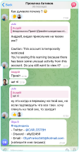
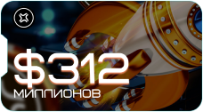
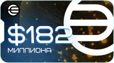
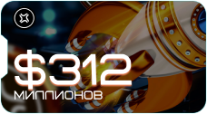
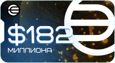

Всім привіт! Мене звуть Кір Уланов, і до початку війни моя професійна діяльність здебільшого була зосереджена на території РФ. Обрубавши всі кінці – я почав будувати бізнес з 0 у сфері крипти
За 2 роки вдалося побудувати компанію 100 FRANKLINS (100F.COM) у США та організувати спільноту людей, з якими ми разом заробляємо на крипті
Фінально організувавши всі робочі процеси, я побачив, як наша команда експертів та інвесторів може допомогти українцям заробляти без вкладень, при цьому допомагаючи ветеранам відновлюватись після бойових дій
Всім привіт! Мене звуть Кір Уланов, і
до початку війни моя професійна
діяльність здебільшого була
зосереджена на території РФ.
Обрубавши всі кінці – я почав
будувати бізнес з 0 у сфері крипти
За 2 роки вдалося побудувати
компанію 100 FRANKLINS (100F.COM)
у США та організувати спільноту
людей, з якими ми разом
заробляємо на крипті
Фінально організувавши всі робочі
процеси, я побачив, як
наша
команда експертів та інвесторів
може допомогти українцям
заробляти без вкладень,
при цьому
допомагаючи ветеранам
відновлюватись після бойових дій

КІР УЛАНОВ
Засновник crypto-екосистеми
100 FRANKLINS
УМОВИ УЧАСТІ ДУЖЕ ПРОСТІ
ДЛЯ УКРАЇНЦІВ МИ БЕЗКОШТОВНО НАДАЄМО:
-
Навчання
-
Наставників
-
Спільноту
-
Інвестиції
ВІД ВАС ВИМАГАЄТЬСЯ:
-
Підтвердити своє громадянство та особистість 16+
-
2-3 години на день на виконання детальних завдань
-
Стартовий капітал – не потрібен!
Залишили заявку на підключення до спільноти:
1891
- І ЗНАЙТИ:
-
Додатковий або основний дохід онлайн
-
Незалежність від політичних/військових подій
-
Можливість допомагати близьким, захисникам та своїй країні
ВИ ЗАПИТАЄТЕ: НАВІЩО НАМ ЦЕ ВСЕ ПОТРІБНО?
ВИ ЗАПИТАЄТЕ: НАВІЩО НАМ ЦЕ ВСЕ ПОТРІБНО?
МИ ХОЧЕМО ПРОТЯГОМ 2024-2025 РР. РАЗОМ З ВАМИ ЗАРОБИТИ ПОНАД $10 МЛН І ЩОНАЙМЕНШЕ $1 МЛН ВИДІЛИТИ НА ВІДНОВЛЕННЯ ТА РЕАБІЛІТАЦІЮ ЗАХИСНИКІВ УКРАЇНИ
Економіка України через війну дуже постраждала. І війна ще триває, і треба армії допомогати, поранених лікувати, дітей ростити та економіку піднімати
МИ ХОЧЕМО ПРОТЯГОМ 2024-2025
РР. РАЗОМ З ВАМИ
ЗАРОБИТИ ПОНАД
$10 МЛН І ЩОНАЙМЕНШЕ $1 МЛН
ВИДІЛИТИ НА ВІДНОВЛЕННЯ
ТА РЕАБІЛІТАЦІЮ ЗАХИСНИКІВ УКРАЇНИ
Экономика Украины из-за войны сильно пострадала. И война еще продолжается, и нужно армии помогать, раненых лечить, детей растить и экономику поднимать, потому что нам тут жить.
Чимало українців втратили роботу, а ціни на комуналку зростають, буквально все дорожчає день за днем. І люди приходять у відчай, як заробити на життя
Ми покажемо, як заробляємо самі, і навчимо заробляти вас.
Грошей за це ми не візьмемо. Це буде наш внесок у
відновлення добробуту України та наших улюблених українців
Заробіток на крипті – це чудовий варіант підтримати себе та близьких. Багато хто вважає, що це дуже складно і не всім підходить. Це не так. Якщо у вас є комп/ноут і смартфон, пара годин на день і трохи завзятості – ви не пропадете і навчитеся заробляти, не виходячи з дому
Чимало українців втратили роботу,
а ціни на комуналку зростають,
буквально все дорожчає день за
днем. І люди приходять у відчай, як
заробити на життя
Ми покажемо, як заробляємо самі,
і навчимо заробляти вас.
Грошей
за це ми не візьмемо. Це буде наш
внесок у відновлення добробуту
України та наших улюблених
українців
Заробіток на крипті – це
чудовий варіант підтримати
себе та близьких.
Багато хто
вважає, що це дуже складно і
не всім підходить. Це не так.
Якщо у вас є комп/ноут і
смартфон, пара годин на день і
трохи завзятості – ви не
пропадете і навчитеся
заробляти, не виходячи з дому
Що ще важливо відзначити – це ваша довіра, яку ми цінуємо, як і свою репутацію. У цьому ви можете бути впевнені на всі сто. Жоден зароблений долар не пройде повз учасників спільноти. Кожну дію та переказ можна буде відстежувати в режимі реального часу!
МИ НЕ ПРО ПІРАМИДУ
МИ НЕ ПРО УСПІШНИЙ УСПІХ
МИ – ПРО КРИПТУ
-
Тут потрібно працювати мінімум 2-3 години на день
-
Важлива комп'ютерна грамотність на рівні офісного співробітника
-
Проходження верифікації з підтвердженням громадянства та особи 16+
ЧИ ПОТРІБНІ ТУТ ІНВЕСТИЦІЇ?
ТАК, АЛЕ…
На 1 учасника потрібні мінімум $300 інвестицій на місяць для активної роботи (оплата роботи команди, розвиток спільноти, поповнення гаманців та ін.)
ТОДІ ЯК МОЖНА СТАРТУВАТИ БЕЗ ПОЧАТКОВОГО КАПІТАЛУ?
Компанія 100 FRANKLINS повністю бере на себе всі витрати!
А ЩО ПОТРІБНО, ЩОБ Я МІГ ЗАРОБИТИ НА КРИПТОРИНКУ?
-
Підтвердження своєї особи: під час проходження
верифікації важливо продемонструвати
документ, що підтверджує ваше
громадянство та вік 16+ -
Бути активним та виділяти щодня на проєкт
мінімум 2-3 години -
Дотримуватися правил спільноти. Допомагати
та підтримувати інших учасників
-
Підтвердження своєї особи:
під час проходження
верифікації важливо
продемонструвати документ,
що підтверджує ваше
громадянство та вік 16+ -
Бути активним та виділяти
щодня на проєкт мінімум 2-3
години -
Дотримуватися правил
спільноти. Допомагати
та підтримувати інших
учасників
У ЧОМУ КЛЮЧОВА СУТЬ ЗАРОБІТКУ?
Наша команда експертів знаходить перспективні проєкти
та готує докладні текстові та відеоінструкції,
які кнопки натискати, щоб виконати завдання
Завдання абсолютно різні: від «підписатися на соцмережі проєкту» до «зробити 10 оплат, використовуючи бюджет, виділений нашій компанії»
Таким чином, тестуємо проєкти на початковому етапі їхнього розвитку, виділяючи для цього час та гроші
Натомість маємо можливість отримати винагороду від проєктів!
Наша команда експертів знаходить
перспективні проєкти та готує
докладні текстові та відеоінструкції,
які кнопки натискати, щоб виконати
завдання
Завдання абсолютно різні: від
«підписатися на соцмережі проєкту»
до «зробити 10 оплат, використовуючи
бюджет, виділений нашій компанії»
Таким чином, тестуємо
проєкти на початковому
етапі їхнього розвитку,
виділяючи для цього час та
гроші
Натомість маємо можливість
отримати винагороду від
проєктів!
НАВІЩО ПРОЄКТАМ РОЗДАВАТИ ГРОШІ?
Проєктам це вигідно. Ми їх тестуємо, стаємо лояльними до їхнього бренду, забезпечуємо маркетинг та впізнаваність на ринку
Якщо дуже коротко – наші дії допомагають їм розвиватися
ЯК ОРГАНІЗОВАНО РОБОТУ В КОМАНДІ?
ЯК ОРГАНІЗОВАНО РОБОТУ В КОМАНДІ?
-
Крок 1
Ви заповнюєте форму та підтверджуєте свою особистість 16+
Ви заповнюєте форму та
підтверджуєте свою особистість 16+ -
Крок 2
Керівник підтверджує, що ви підходите (так, взяти участь зможуть не всі, а лише ті, хто реально готовий вкладатися своїм часом)
-
Крок 3
Вам видають усі необхідні інструменти для роботи: доступ до спільноти, навчання, наставника, криптогаманці, акаунти в соцмережах та ін.
Вам видають усі необхідні інструменти для роботи: доступ
до спільноти, навчання, наставника, криптогаманці, акаунти
в соцмережах та ін. -
Крок 4
Ви дотримуєтеся плану «1-2-3», виконуєте завдання
ЩО РОБИТЬ КОМАНДА 100 FRANKLINS?
-

Ми знаходимо найперспективніші проєкти, які готові заплатити нам гроші

-

Розповідаємо у тексті та показуємо
у детальному відеоогляді по кроках, що саме і як необхідно зробитиРозповідаємо у тексті
та показуємо у детальному відеоогляді по кроках,
що саме і як
необхідно зробити

-

Підтримуємо вас і підказуємо, як вчинити, якщо виникли питання

-
Ми інвестуємо. Усі витрати
для виконання тестів, активностей, фінансову мотивацію наставників, виробництво навчальних матеріалів – компанія 100 FRANKLINS бере на себеМи інвестуємо. Усі витрати для виконання тестів, активностей, фінансову мотивацію наставників, виробництво навчальних матеріалів – компанія 100 FRANKLINS бере на себе


ЧИ Є ВІДГУКИ ВІД УЧАСНИКІВ СПІЛЬНОТИ?
Семенов
Владислав
Sales Team Lead
Іван Яцковець
Системний адміністратор

Антон Будник
Маркетинг менеджер

Ольга Біздига
Мама в декреті
Антон Будник
Маркетинг менеджер
Ольга Біздига
Мама в декреті
НАВІЩО ЦЕ ВСЕ КОМАНДІ 100 FRANKLINS?
Ми зацікавлені в тому, щоб ви заробляли разом із нами,
бо таку амбітну мету, яку ми поставили, можна
реалізувати лише разом з армією однодумців.
Ви нам потрібні, і ми дуже розраховуємо на вас!
Ми зацікавлені в тому, щоб ви
заробляли разом із нами, бо таку
амбітну мету, яку ми поставили,
можна реалізувати лише разом з
армією однодумців.
Ви нам потрібні,
і ми дуже розраховуємо на вас!
А З ВАМИ ТОЧНО… МОЖНА ЗАРОБИТИ?!
Крипторинок – щедрий! Тільки за 2023 рік проєкти виділили для таких, як ми, понад $7 мільярдів! Виділили як подяку за те, що ми допомагаємо проєктам знаходити помилки, розповідаємо про них у соціальних мережах
І це лише великі проєкти, які здобули популярність на ринку!
Серед них:

 

І це лише невелика частина!
Крипторинок – щедрий! Тільки за 2023 рік проєкти виділили для таких, як ми,
понад $7 мільярдів!
Виділили як подяку за те, що ми
допомагаємо проєктам знаходити помилки, розповідаємо про них
у соціальних мережах
І це лише великі проєкти, які здобули популярність
на ринку!
Серед них:


І це лише невелика частина!


У 2024-2025 pp. на нас з вами чекають «роздачі» на десятки мільярдів доларів. І зараз саме час розібратися у всьому та заробити разом!
У 2024-2025 pp. на нас з вами чекають «роздачі» на десятки мільярдів доларів.
І зараз саме час розібратися у всьому та заробити разом!
ЯК БУДУТЬ РОЗПОДІЛЕНІ ЗАРОБЛЕНІ ГРОШІ?
А ВИ ТОЧНО НАС НЕ ОБДУРИТЕ?
Навчити безкоштовно кожного учасника – це велика експертна робота та величезний внесок
Ми за 100% прозорість у наших діях і за побудову довірчих стосунків у рамках спільноти
До того ж, всі наші активності на крипторинку фіксуються
в онлайн-реєстрі (блокчейні). Це абсолютно прозорий реєстр, де кожну транзакцію,
будь-який рух грошей можна перевірити та побачити: скільки грошей прийшло, кому
і куди вони пішли далі
Жоден долар не пройде повз учасників нашої спільноти!
Навчити безкоштовно кожного
учасника – це велика експертна робота та величезний внесок
Ми за 100% прозорість у наших діях і за побудову довірчих стосунків у рамках спільноти
До того ж, всі наші активності
на крипторинку фіксуються
в онлайн-реєстрі (блокчейні).
Це абсолютно прозорий реєстр, де кожну транзакцію, будь-який рух грошей можна
перевірити та побачити: скільки грошей прийшло, кому і куди вони пішли далі
Жоден долар не пройде повз учасників нашої спільноти!
Залишили заявку на підключення до спільноти:
1891
ХТО БУДЕ У КОМАНДІ ПРОЄКТУ?
НИЖЧЕ ОПИСАНО
ДОСВІД CRYPTO-КОМАНДИ
100 FRANKLINS
ТА ПРЕДСТАВЛЕНІ КЛЮЧОВІ
КЕРІВНИКИ СПІЛЬНОТИ
НИЖЧЕ ОПИСАНО
ДОСВІД CRYPTO-КОМАНДИ
100 FRANKLINS
ТА ПРЕДСТАВЛЕНІ КЛЮЧОВІ
КЕРІВНИКИ
СПІЛЬНОТИ
Мережа з 100+ крипто-впливових з аудиторією в Telegram понад 10 млн підписників
Досвід організації crypto-пулів на 10+ млн доларів
Досвід організації crypto-пулів на 10+ млн
доларів
Створена платформа зі
збільшення прибутку crypto-інвесторів
і crypto-проєктів
Заснований сервіс зі створення
ботів і воронок продажiв для
crypto-експертів
і crypto-проєктів
Досвід набору більше 100.000 користувачів у crypto-проєкти
Досвід створення ботів та воронок продажiв для запуску криптопроєктів
(середня
кількість іксів
на лістингу х38)
Спільнота з 10.000+ програмістів
Досвід валідації SUI, Solana, Aptos, NYM та ще близько десятка crypto-проєктів
Партнерський досвід інкубації crypto-проєктів та лістингу на ByBit, OKX, MEXc, BitGet, Gate
Партнерський досвід інкубації
crypto-проєктів та лістингу
на ByBit, OKX, MEXc, BitGet,
Gate
Founder 100 Franklins & CRYPTO DROP CAMP

Co-Founder 100 Franklins & CRYPTO DROP CAMP

Co-Founder 100 Franklins & CRYPTO DROP CAMP

Lead Investor 100 Franklins & CRYPTO DROP CAMP

Co-Founder 100 Franklins & CRYPTO HUNTERS

Co-Founder 100 Franklins & CRYPTO DROP CAMP
Founder 100 Franklins & CRYPTO DROP CAMP
Co-Founder 100 Franklins & CRYPTO DROP CAMP
Co-Founder 100 Franklins & CRYPTO DROP CAMP
Lead Investor 100 Franklins & CRYPTO DROP CAMP
Co-Founder 100 Franklins & CRYPTO HUNTERS
Co-Founder 100 Franklins & CRYPTO DROP CAMP
НА ЯКІ ПИТАННЯ ПОТРІБНО ЗНАТИ ВІДПОВІДІ?
НА ОСНОВНІ ПИТАННЯ ВЖЕ ДАНО ВІДПОВІДІ ВИЩЕ. ДАВАЙТЕ ФІНАЛЬНО РОЗБЕРЕМО НАЙГОЛОВНІШІ!
-
Питання 1
Чи потрібен стартовий капітал, щоб почати заробляти у крипті?
Чи потрібен стартовий капітал,
щоб почати заробляти у крипті?Ні. Ми готові інвестувати гроші, вам необхідно лише приділяти свій час
-
Питання 2
Що потрібно мати для старту? Яка потрібна техніка?
Що потрібно мати для старту?
Яка потрібна техніка?З техніки достатньо мати комп'ютер/ноутбук, а також смартфон/планшет. Основна ваша діяльність полягає в роботі з інформацією в інтернеті, тому не обов'язково купувати/мати найпотужніший комп'ютер у світі. Вистачить вашого домашнього комп'ютера
З техніки достатньо мати комп'ютер/ноутбук, а також смартфон/планшет. Основна ваша діяльність полягає в роботі з інформацією
в інтернеті, тому не обов'язково купувати/мати найпотужніший комп'ютер у світі. Вистачить вашого домашнього комп'ютера -
Питання 3
Як можна стати частиною спільноти?
Як можна стати частиною
спільноти?На цій сторінці натисніть кнопку «Стати частиною спільноти» та пройдіть коротке опитування. Якщо ви успішно пройдете його – наступним етапом буде проходження верифікації з одним із керівників проєкту. Верифікація проходить у форматі онлайн-зустрічі, обов'язково увімкніть відео
-
Питання 4
Чи потрібна спеціальна технічна або інша освіта?
Ні. Важлива комп'ютерна грамотність, вона має бути на рівні офісного працівника. І також якості характеру – ми цінуємо та поважаємо один одного, і в команду приймаємо однодумців. Ваша освіта не має значення
Ні. Важлива комп'ютерна грамотність, вона має бути на рівні офісного працівника. І також якості характеру – ми цінуємо та поважаємо один одного,
і в команду приймаємо однодумців. Ваша освіта не має значення -
Питання 5
Коли вийде заробити перші гроші?
Коли вийде заробити
первые деньги?Ми наголошуємо, що наші активності не можуть бути основним видом діяльності на початковому етапі. У середньому перші гроші ви зароблятимете вже на 2, можливо, на 3 місяць. Відчутну винагороду (від $500-700/міс.) можна отримувати вже після 7-8 місяців активної роботи, коли накопичите базу проєктів
Ми наголошуємо, що наші активності
не можуть бути основним видом діяльності на початковому етапі.
У середньому перші гроші ви зароблятимете вже на 2, можливо,
на 3 місяць. Відчутну винагороду (від $500-700/міс.) можна отримувати вже після 7-8 місяців активної роботи, коли накопичите базу проєктів -
Питання 6
Як можна бути впевненим, що зароблені винагороди не підуть наліво?
Як можна бути впевненим,
що зароблені винагороди
не підуть наліво?Усі наші активності на крипторинку фіксуються в онлайн-реєстрі (блокчейні). Це абсолютно прозорий реєстр, де кожну транзакцію, будь-який рух грошей можна перевірити та побачити, скільки грошей прийшло, кому і куди вони пішли далі
Жоден долар не пройде повз учасників нашої спільноти!
-
Питання 7
Скільки можна заробляти з компанією 100 ФРАНКЛІНІВ?
Скільки можна заробляти
з компанією 100 ФРАНКЛІНІВ?Это полностью зависит от вас, вашей активности и дисциплины. Мы хотим, чтобы каждый участник мог зарабатывать от $1’000 в месяц. И со своей стороны предоставим для этого все возможности – инвестиции, экспертизу, обучение и поддержку
Це повністю залежить від вас, вашої активності та дисципліни. Ми хочемо, щоб кожен учасник міг заробляти від $1'000 на місяць. І зі свого боку надамо для цього всі можливості – інвестиції, експертизу, навчання та підтримку
Залишили заявку на підключення до спільноти:
1891